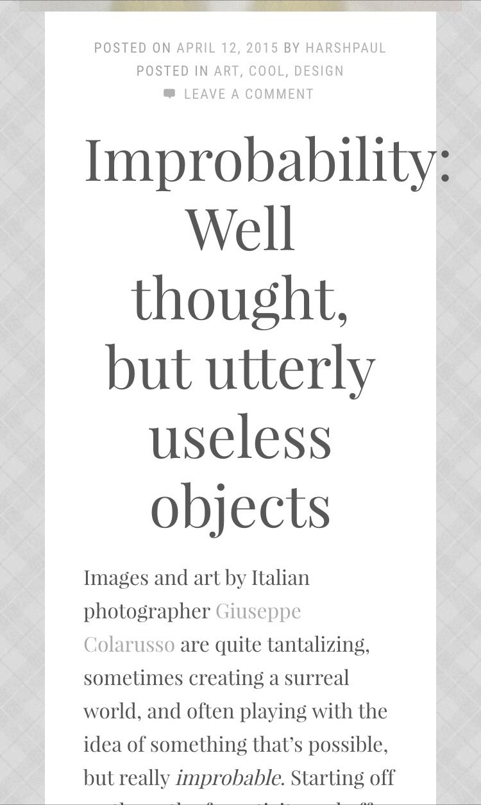

Using Musical Scales to Build Harmonious Typography
Musical Intervals & Math
Every Note
Is a Number
Every musical note is a number: a frequency vibrating a certain number of times per second (measured in hertz).


An Octave
Increases 2×
| Concert A = 440Hz | A5 = 880Hz |
|---|---|
| Middle C ~= 131Hz | C4 ~=262Hz |


A Fifth
Increases ~1.5×
| A3 = 220Hz | E4 ~=330Hz |
|---|---|
| C3 ~= 131Hz | G3 ~=196Hz |

A Half-Step Increases 1.0595×
The half-step is the building block of scales.
All intervals are exponents of the half-step.
| A (440Hz) | × | 1.0595 | = | A# (466.16Hz) |
|---|---|---|---|---|
| A# (466.16Hz) | × | 1.0595 | = | B (493.88Hz) |
| A (440Hz) | × | 1.05952 | = | B (493.88Hz) |
Typography & Modular Scales
Single-Stranded Modular Scales
- Every interval is the same
A musical half-step scale is literally modular
A musical whole-step scale is literally modular
Multi-Stranded Modular Scales
- Major & minor scales are created by alternating whole & half steps (WWHWWWH) / (WHWWHWW)
- These patterns repeat every octave, creating a mult-stranded modular scale.
Modular Scales
in Sass
- Modular Scale
- Sassline
- Typesettings
- Type Scale
- Gridlover
- ALA: More Meaningful Typography (“double-stranded” modular scale)
See & Hear
Interval: Octave
Notes Are Numbers
Every musical note is a number: a frequency vibrating a certain number of times per second (measured in hertz).
Interval: Fifth
Notes Are Numbers
Every musical note is a number: a frequency vibrating a certain number of times per second (measured in hertz).
Interval: Third
Notes Are Numbers
Every musical note is a number: a frequency vibrating a certain number of times per second (measured in hertz).
Scale: Major Scale
Heading 1
Heading 2
Heading 3
Blockquote
Paragraph
Scale: Pentatonic
Heading 1
Heading 2
Heading 3
Blockquote
Paragraph
Scale: Major Triad
Heading 1
Heading 2
Heading 3
Blockquote
Paragraph
Responsive Musical Scales
More notes per octave: better for small screens
Fewer notes per octave: better for large screens

Intro to TypeTuner
TypeTuner.com
@include set-hierarchy( $list );
@include add-breakpoint(
$label,
$min-width,
$font-size,
$line-height,
$scale
);
@include remove-breakpoint( $label );
@include type-tune( extend | class );